4. Risoluzione dei tre problemi con Google Gemini
Forniremo screenshot delle tre sessioni di Gemini utilizzate per risolvere i tre problemi proposti. Entreremo in notevole dettaglio. Una volta fatto ciò, non ripeteremo il processo per le altre IA testate. Esse operano in modo simile. Forniremo solo i dettagli più rilevanti.
4.1. Introduzione
Facciamo riferimento alla prima schermata di Gemini fornita in precedenza:
 |
- In [1], l'URL di Gemini;
- In [2], la versione di Gemini utilizzata;
- In [3-5], i tre problemi sottoposti a Gemini;
Gemini è un prodotto di Google disponibile all'URL [https://gemini.google.com/]. Per visualizzare la cronologia delle sessioni di domande e risposte come mostrato sopra, è necessario creare un account. Inoltre, come tutte le altre IA testate, Gemini limita il numero di domande che è possibile porre e il numero di file che è possibile caricare. Quando si raggiunge questo limite, la sessione termina e viene offerta la possibilità di continuarla in un secondo momento. Dato che è piuttosto frustrante interrompersi nel bel mezzo di una sessione, ho sottoscritto un abbonamento. Fortunatamente, il primo mese dell’abbonamento a Gemini è gratuito. Ho fatto lo stesso con le altre IA che presentavano questi limiti, ovvero ChatGPT, MistralAI e ClaudeAI. Ho sottoscritto un abbonamento di un mese, ma in quei casi il primo mese era a pagamento. Con Grok non ho riscontrato alcun limite. DeepSeek non annuncia alcun limite, ma a volte risponde con [Server occupato] e interrompe la sessione. In sostanza, si tratta di impostare dei limiti senza dirlo.
D'ora in poi, mi riferirò alle sessioni di domande e risposte semplicemente come "sessioni". Le IA usano molto spesso il termine inglese "chat" o "conversazione".
L'interfaccia di Gemini per porre una domanda è la seguente:
 |
- In [1], la tua domanda;
- In [2], l'icona che avvia l'IA per calcolare la risposta;
- In [3-4], puoi allegare dei file;
4.2. Problema 1
La sessione per il Problema 1 è la seguente:
 |
- In [1], la domanda;
- In [2], l'inizio della risposta di Gemini;
Il resto della risposta è il seguente:
 |
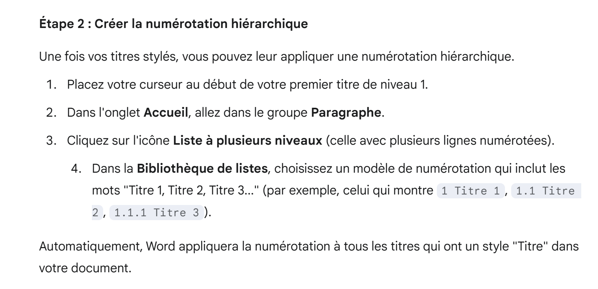 |
 |
 |
La risposta è corretta. Anche le altre cinque IA daranno la risposta corretta in una forma simile.
4.3. Problema 2
4.3.1. Introduzione
Qui ricordiamo il problema iniziale del corso [python3-flask-2020]. Si tratta di un testo fornito agli studenti durante un esercitazione.
 |
La tabella sopra riportata ci permette di calcolare l'imposta nel caso semplificato di un contribuente che ha solo lo stipendio da dichiarare. Come indicato nella nota (1), l'imposta calcolata in questo modo è l'imposta prima dell'applicazione di tre meccanismi:
- Il tetto massimo del quoziente familiare, che si applica ai redditi elevati;
- Il credito d'imposta e la riduzione d'imposta che si applicano ai redditi bassi;
Pertanto, il calcolo dell'imposta prevede le seguenti fasi [http://impotsurlerevenu.org/comprendre-le-calcul-de-l-impot/1217-calcul-de-l-impot-2019.php]:
 |
Proponiamo di scrivere un programma per calcolare l'imposta dovuta da un contribuente per il 2019 nel caso semplificato di un contribuente che deve dichiarare solo il proprio stipendio.
4.3.1.1. Calcolo dell'imposta lorda
L'imposta lorda può essere calcolata come segue:
In primo luogo, calcolare il numero di quote del contribuente:
- Ciascun genitore contribuisce con 1 quota;
- I primi due figli contribuiscono ciascuno con 1/2 quota;
- I figli successivi contribuiscono ciascuno con una quota:
Il numero di azioni è quindi:
- nbParts=1+nbChildren*0,5+(nbChildren-2)*0,5 se il dipendente è celibe/nubile;
- nbParts=2+nbChildren*0,5+(nbChildren-2)*0,5 se è sposato;
- dove nbChildren è il numero di figli;
- Calcoliamo il reddito imponibile R = 0,9 * S, dove S è lo stipendio annuale;
- Il quoziente familiare QF è calcolato come QF = R / nbParts;
- Calcoliamo l'imposta lorda I sulla base dei seguenti dati (2019):
9964 | 0 | 0 |
27.519 | 0,14 | 1.394,96 |
73.779 | 0,3 | 5.798 |
156.244 | 0,4 | 13.913,69 |
0 | 0,45 | 20163,45 |
Ogni riga ha 3 campi: campo1, campo2, campo3. Per calcolare l'imposta I, cerchiamo la prima riga in cui QF <= campo1 e prendiamo i valori da quella riga. Ad esempio, per un dipendente sposato con due figli e uno stipendio annuo S di 50.000 euro:
Reddito imponibile: R=0,9*S=45.000
Numero di quote: nbParts=2+2*0,5=3
Quoziente familiare: QF=45.000/3=15.000
La prima riga in cui QF <= campo1 è la seguente:
L'imposta I è quindi pari a 0,14*R – 1394,96*numeroDiAzioni=[0,14*45000-1394,96*3]=2115. L'imposta viene arrotondata per difetto all'euro più vicino.
Se nella prima riga si verifica la condizione QF <= campo1, l'imposta è pari a zero.
Se QF è tale che la condizione QF <= campo1 non è mai soddisfatta, vengono utilizzati i coefficienti dell'ultima riga. Qui:
il che dà l'imposta lorda I = 0,45*R – 20163,45*nbParts.
4.3.1.2. Limite del quoziente familiare
 |
Per determinare se si applica il limite massimo del quoziente familiare (QF), ricalcoliamo l'imposta lorda senza i figli. Ancora una volta, per il dipendente sposato con due figli e uno stipendio annuo S di 50.000 euro:
Reddito imponibile: R = 0,9 * S = 45.000
Numero di quote: nbParts=2 (i figli non vengono più conteggiati)
Quoziente familiare: QF = 45.000 / 2 = 22.500
La prima riga in cui QF <= campo1 è la seguente:
L'imposta I è quindi pari a 0,14*R – 1394,96*numero di azioni = [0,14*45.000 – 1394,96*2] = 3.510.
Indennità massima per figli a carico: 1551 * 2 = 3102 euro
Imposta minima: 3.510 – 3.102 = 408 euro
L'imposta lorda con 2 quote, già calcolata nel paragrafo precedente (2.115 euro), è superiore all'imposta minima (408 euro), quindi in questo caso non si applica il limite familiare.
In generale, l'imposta lorda è maggiore di (imposta1, imposta2) dove:
- [imposta1]: è l'imposta lorda calcolata includendo i figli;
- [imposta2]: è l'imposta lorda calcolata senza i figli e ridotta del credito massimo (in questo caso 1.551 euro per mezza quota) relativo ai figli;
4.3.1.3. Calcolo della riduzione d'imposta
 |
Sempre per il dipendente sposato con due figli e uno stipendio annuo S di 50.000 euro:
L'imposta lorda (2.115 euro) del passaggio precedente è inferiore a 2.627 euro per una coppia (1.595 euro per una persona single): si applica quindi la riduzione d'imposta. Essa viene calcolata come segue:
credito d'imposta = soglia (coppia = 1.970 / single = 1.196) – 0,75 * imposta lorda
sconto = 1.970 – 0,75 * 2.115 = 383,75, arrotondato a 384 euro.
Nuova imposta lorda = 2.115 – 384 = 1.731 euro
Nel calcolo dello sconto devono essere rispettate due regole (alcuni strumenti di IA hanno avuto difficoltà su questo punto):
- Lo sconto non può essere negativo;
- Lo sconto non può superare l'imposta già calcolata;
4.3.1.4. Calcolo della riduzione fiscale
 |
Al di sotto di una determinata soglia, viene applicata una riduzione del 20% all'imposta lorda risultante dai calcoli precedenti. Nel 2019, le soglie sono le seguenti:
- Single: 21.037 euro;
- coppia: 42.074 euro; (la cifra di 37.968 utilizzata nell'esempio sopra riportato sembra essere errata);
Questa soglia viene aumentata del valore: 3.797 * (numero di quote pari alla metà apportate dai figli).
Ancora una volta, per il dipendente sposato con due figli e uno stipendio annuo S di 50.000 euro:
- Il suo reddito imponibile (45.000 euro) è inferiore alla soglia (42.074 + 2 × 3.797) = 49.668 euro;
- Ha quindi diritto a una riduzione del 20% della sua imposta: 1.731 * 0,2 = 346,2 euro, arrotondati a 347 euro;
- L'imposta lorda del contribuente diventa: 1.731 – 347 = 1.384 euro;
4.3.1.5. Calcolo dell'imposta netta
Il nostro calcolo termina qui: l'imposta netta dovuta sarà di 1.384 euro. In realtà, il contribuente potrebbe avere diritto ad altre detrazioni, in particolare per le donazioni a organizzazioni pubbliche o di interesse generale.
4.3.1.6. Casi di redditi elevati
Il nostro esempio precedente si applica alla maggior parte dei dipendenti. Tuttavia, il calcolo dell'imposta è diverso per i redditi elevati.
4.3.1.6.1. Limite massimo alla riduzione del 10% sul reddito annuo
Nella maggior parte dei casi, il reddito imponibile viene calcolato utilizzando la formula: R = 0,9 × S, dove S è lo stipendio annuale. Questa è nota come riduzione del 10%. Tale riduzione è soggetta a un limite massimo. Nel 2019:
- Non può superare i 12.502 euro;
- Non può essere inferiore a 437 euro;
Consideriamo il caso di un dipendente non sposato, senza figli e con uno stipendio annuo di 200.000 euro:
- La riduzione del 10% è pari a 200.000 euro > 12.502 euro. Il limite massimo è quindi fissato a 12.502 euro;
4.3.1.6.2. Limite del quoziente familiare
Consideriamo un caso in cui si applica il limite familiare descritto nella sezione |Limite del quoziente familiare|. Prendiamo il caso di una coppia con tre figli e un reddito annuo di 100.000 euro. Ripassiamo i passaggi del calcolo:
- La detrazione del 10% è pari a 100.000 euro < 12.502 euro. Il reddito imponibile R è quindi pari a 100.000 - 10.000 = 90.000 euro;
- La coppia ha nbParts = 2 + 0,5 × 2 + 1 = 4 quote;
- Il suo quoziente familiare è quindi QF = R / nbParts = 90.000 / 4 = 22.500 euro;
- La sua imposta lorda I1 con figli è I1 = 0,14 × 90.000 – 1.394,96 × 4 = 7.020 euro;
- La sua imposta lorda I2 senza figli:
- QF = 90.000 / 2 = 45.000 euro;
- I2 = 0,3 × 90.000 – 5.798 × 2 = 15.404 euro;
- La regola del limite del quoziente familiare stabilisce che il beneficio derivante dai figli non può superare (1.551 × 4 mezze quote) = 6.204 euro. Tuttavia, in questo caso, si ha I2 – I1 = 15.404 – 7.020 = 8.384 euro, che è superiore a 6.204 euro;
- L'imposta lorda viene quindi ricalcolata come I3 = I2 - 6.204 = 15.404 - 6.204 = 9.200 euro;
- Poiché I3 > I1, verrà mantenuta l'imposta I3;
Questa coppia non riceverà né un credito d'imposta né una riduzione, e la loro imposta finale sarà di 9.200 euro.
4.3.1.7. Dati ufficiali
Il calcolo dell'imposta è complesso. Nel corso di questo documento, verranno effettuati dei test utilizzando i seguenti esempi. I risultati provengono dal simulatore dell'amministrazione fiscale |https://www3.impots.gouv.fr/simulateur/calcul_impot/2019/simplifie/index.htm|:
Contribuente | Risultati ufficiali | Risultati dell'algoritmo del documento |
Coppia con 2 figli e un reddito annuo di 55.555 euro | Imposta = 2.815 euro Aliquota fiscale = 14% | Imposta = 2.814 euro Aliquota fiscale = 14% |
Coppia con 2 figli e un reddito annuo di 50.000 euro | Imposta = 1.385 euro Credito d'imposta = 384 euro Riduzione = 346 euro Aliquota fiscale = 14% | Imposta = 1.384 euro Sconto = 384 euro Credito = 347 euro Aliquota fiscale = 14% |
Coppia con 3 figli e un reddito annuo di 50.000 euro | Imposta = 0 euro Credito d'imposta = 720 euro Riduzione = 0 euro Aliquota fiscale = 14% | Imposta = 0 euro Sconto = 720 euro Detrazione = 0 euro Aliquota fiscale = 14% |
Single con 2 figli e un reddito annuo di 100.000 euro | Imposta = 19.884 euro Credito d'imposta = 0 euro Detrazione = 0 euro Aliquota fiscale = 41% | Imposta = 19.884 euro Sovrattassa = 4.480 euro Sconto = 0 euro Riduzione = 0 euro Aliquota fiscale = 41% |
Single con 3 figli e un reddito annuo di 100.000 euro | Imposta = 16.782 euro Credito d'imposta = 0 euro Detrazione = 0 euro Aliquota fiscale = 41% | Imposta = 16.782 € Sovrattassa = 7.176 euro Sconto = 0 euro Riduzione = 0 euro Aliquota fiscale = 41% |
Coppia con 3 figli e un reddito annuo di 100.000 euro | Imposta = 9.200 euro Credito d'imposta = 0 euro Detrazione = 0 euro Aliquota fiscale = 30% | Imposta = 9.200 euro Sovrattassa = 2.180 euro Sconto = 0 euro Riduzione = 0 euro Aliquota fiscale = 30% |
Coppia con 5 figli e un reddito annuo di 100.000 euro | Imposta = 4.230 euro Credito d'imposta = 0 euro Detrazione = 0 euro Aliquota fiscale = 14% | Imposta = 4.230 € Sconto = 0 euro Detrazione = 0 euro Aliquota fiscale = 14% |
Celibe, senza figli e reddito annuo di 100.000 euro | Imposta = 22.986 euro Credito d'imposta = 0 euro Detrazione = 0 euro Aliquota fiscale = 41% | Imposta = 22.986 euro Sovrattassa = 0 euro Sconto = 0 euro Detrazione = 0 euro Aliquota fiscale = 41% |
Coppia con 2 figli e un reddito annuo di 30.000 euro | Imposta = 0 euro Credito d'imposta = 0 euro Detrazione = 0 euro Aliquota fiscale = 0% | Imposta = 0 euro Sconto = 0 euro Riduzione = 0 euro Aliquota fiscale = 0% |
Single senza figli e con un reddito annuo di 200.000 euro | Imposta = 64.211 euro Credito d'imposta = 0 euro Detrazione = 0 euro Aliquota fiscale = 45% | Imposta = 64.210 euro Sovrattassa = 7.498 euro Sconto = 0 euro Riduzione = 0 euro Aliquota fiscale = 45% |
Coppia con 3 figli e un reddito annuo di 200.000 euro | Imposta = 42.843 euro Credito d'imposta = 0 euro Detrazione = 0 euro Aliquota fiscale = 41% | Imposta = 42.842 euro Sovrattassa = 17.283 euro Sconto = 0 euro Riduzione = 0 euro Aliquota fiscale = 41% |
Nell'esempio sopra riportato, il termine "sovrapprezzo" si riferisce all'importo aggiuntivo pagato dai redditi più elevati a causa di due fattori:
- Il limite massimo del 10% sulla detrazione dal reddito annuo;
- Il limite massimo dell'assegno familiare;
Questo indicatore non ha potuto essere verificato poiché il simulatore dell'autorità fiscale non lo fornisce.
Si può notare che l’algoritmo del documento calcola ogni volta l’importo corretto dell’imposta, sebbene con un margine di errore di 1 euro. Questo margine di errore deriva dall’arrotondamento. Tutti gli importi monetari vengono arrotondati per eccesso all’euro più vicino in alcuni casi e per difetto all’euro più vicino in altri. Poiché non conoscevo le regole ufficiali, gli importi monetari nell’algoritmo del documento sono stati arrotondati:
- per arrotondamento per eccesso all'euro successivo per sconti e riduzioni;
- per difetto all'euro più vicino per i supplementi e l'imposta finale;
Chiederemo all'IA di eseguire questo calcolo dell'imposta.
4.3.2. Configurazione della sessione Gemini
La domanda posta a Gemini è accompagnata da due file:
 |
- In [1], il calcolo appena illustrato è stato inserito in un documento PDF fornito a Gemini. Gemini troverà lì le regole precise per il calcolo semplificato dell'imposta del 2019 sui redditi del 2018;
- In [2], le nostre istruzioni;
- In [3], il comando per avviare l'IA;
Le nostre istruzioni nel file di testo [instructionsAvecPDF.txt] sono le seguenti:
Queste istruzioni sono il risultato di numerose domande poste a Gemini. Diventa subito chiaro che l'IA deve essere guidata in modo molto rigoroso se vogliamo ottenere ciò che desideriamo. È stato proprio a causa di tutti questi tentativi ed errori che la sessione di Gemini è stata infine interrotta per superamento dei limiti. Esaminiamo il resto di queste istruzioni:
- Riga 1: specifichiamo che la conversazione deve essere in francese. Questa istruzione è per DeepSeek, che tendeva a parlare inglese;
- Riga 3: ciò che vogliamo;
- Riga 5: diciamo all'IA di utilizzare il PDF che abbiamo fornito;
- Righe 7–14: una serie di consigli utili, in particolare per il Problema 3 senza il PDF. Diverse IA si sono confuse nel calcolo delle imposte;
- Righe 15–44: gli 11 test unitari che vogliamo includere nello script generato. Una volta generato lo script, lo eseguiremo in PyCharm e vedremo se tutti e 11 i test vengono superati;
- Righe 46–53: senza queste istruzioni, le IA genererebbero test unitari alla ricerca di risultati esatti che fallirebbero;
- Righe 55–56: dico all'IA di non andare online. La soluzione più semplice è usare il PDF;
- Righe 58–59: L'IA non ha seguito questa istruzione. Ho dovuto scriverla esplicitamente in un prompt quando ho notato che un test era fallito;
- Righe 61–65: Specifico che tipo di script Python voglio;
- Righe 67–69: Avrei preferito un link per recuperare lo script generato perché visualizzare il codice sullo schermo richiede tempo. È emerso che la maggior parte delle IA non è in grado di farlo. I link forniti non funzionavano;
- Righe 71–72: Avrei voluto sapere il tempo impiegato dall'IA per rispondere alla domanda. Solo Gemini è stato in grado di fornire questa informazione. Le altre IA o non hanno risposto a questa istruzione o hanno fornito numeri arbitrari, indicando che non l'avevano compresa;
4.3.3. Risposta di Gemini
La prima risposta di Gemini è la seguente:
 |
- In [1-4], Gemini fornisce i link alla parte del PDF o del file di testo contenente le istruzioni che sta utilizzando in un dato momento;
Il resto è il seguente:
 |
- In [1], Gemini afferma di aver eseguito con successo tutti gli 11 test unitari. La maggior parte delle IA ha fatto questa affermazione sia per il Problema 2 che per il Problema 3, e spesso, quando lo script generato veniva caricato, non funzionava. Questa affermazione dovrebbe quindi essere presa con le pinze. Per Gemini, tuttavia, ciò si rivelerà vero;
- In [2], un link che risulta non funzionare;
- In [3], solo Gemini ha fornito un tempo di esecuzione realistico;
Quindi il link [2] non funziona. Diciamo a Gemini:
 |
Risposta di Gemini:
 |
- In [1], lo script Python generato da Gemini;
Carichiamo questo script in PyCharm ed eseguiamo:
- In [1], [gemini1] è lo script generato da Gemini;
Quando lo script viene eseguito, compaiono i seguenti errori di compilazione:
"C:\Program Files\Python313\python.exe" "C:/Program Files/JetBrains/PyCharm 2025.2.0.1/plugins/python-ce/helpers/pycharm/_jb_unittest_runner.py" --path "C:\Data\st-2025\dev\python\code\python-flask-2025-cours\outils ia\chatGPT\chatGPT1.py"
Testing started at 17:12 ...
Launching unittests with arguments python -m unittest C:\Data\st-2025\dev\python\code\python-flask-2025-cours\outils ia\chatGPT\chatGPT1.py in C:\Data\st-2025\dev\python\code\python-flask-2025-cours
Traceback (most recent call last):
File "C:\Program Files\JetBrains\PyCharm 2025.2.0.1\plugins\python-ce\helpers\pycharm\_jb_unittest_runner.py", line 38, in <module>
sys.exit(main(argv=args, module=None, testRunner=unittestpy.TeamcityTestRunner,
~~~~^^^^^^^^^^^^^^^^^^^^^^^^^^^^^^^^^^^^^^^^^^^^^^^^^^^^^^^^^^^^^^^^^^
buffer=not JB_DISABLE_BUFFERING))
^^^^^^^^^^^^^^^^^^^^^^^^^^^^^^^^
File "C:\Program Files\Python313\Lib\unittest\main.py", line 103, in __init__
self.parseArgs(argv)
~~~~~~~~~~~~~~^^^^^^
File "C:\Program Files\Python313\Lib\unittest\main.py", line 142, in parseArgs
self.createTests()
~~~~~~~~~~~~~~~~^^
File "C:\Program Files\Python313\Lib\unittest\main.py", line 153, in createTests
self.test = self.testLoader.loadTestsFromNames(self.testNames,
~~~~~~~~~~~~~~~~~~~~~~~~~~~~~~~~~~^^^^^^^^^^^^^^^^
self.module)
^^^^^^^^^^^^
File "C:\Program Files\Python313\Lib\unittest\loader.py", line 207, in loadTestsFromNames
suites = [self.loadTestsFromName(name, module) for name in names]
~~~~~~~~~~~~~~~~~~~~~~^^^^^^^^^^^^^^
File "C:\Program Files\Python313\Lib\unittest\loader.py", line 137, in loadTestsFromName
module = __import__(module_name)
File "C:\Data\st-2025\dev\python\code\python-flask-2025-cours\outils ia\chatGPT\chatGPT1.py", line 28, in <module>
[cite_start]
^^^^^^^^^^
NameError: name 'cite_start' is not defined
Process finished with exit code 1
Empty suite
- Riga 30, l'errore di compilazione. [cite_start] è un marcatore utilizzato per generare un tipo specifico di testo;
Inseriamo i log sopra riportati in un file [logs gemini1.txt] e lo forniamo a Gemini:
 |
La risposta di Gemini è quindi la seguente:
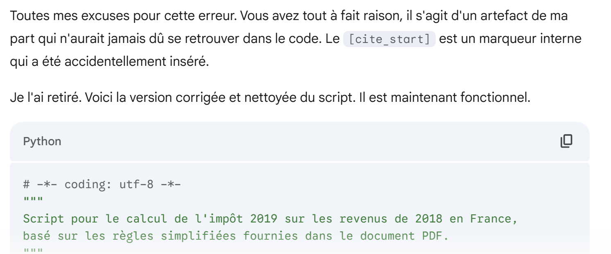 |
Una volta caricato in PyCharm, l'esecuzione del nuovo script genera esattamente lo stesso errore. Lo comunichiamo a Gemini fornendo nuovamente i log di esecuzione:
La risposta di Gemini è la seguente:
 |
Questa volta funziona. Tutti gli 11 test unitari vengono superati. Diciamo a Gemini:
E lui risponde:
 |
Lo script generato da Gemini ha seguito le istruzioni fornite nel file di testo [instructionsWithPDF.txt]:
1 2 3 4 5 6 7 8 9 10 11 12 13 14 15 16 17 18 19 20 21 22 23 24 25 26 27 28 29 30 31 32 33 34 35 36 37 38 39 40 41 42 43 44 45 46 47 48 49 50 51 52 53 54 55 56 57 58 59 60 61 62 63 64 65 66 67 68 69 70 71 72 73 74 75 76 77 78 79 80 81 82 83 84 85 86 87 88 89 90 91 92 93 94 95 96 97 98 99 100 101 102 103 104 105 106 107 108 109 110 111 112 113 114 115 116 117 118 119 120 121 122 123 124 125 126 127 128 129 130 131 132 133 134 135 136 137 138 139 140 141 142 143 144 145 146 147 148 149 150 151 152 153 154 155 156 157 158 159 160 161 162 163 164 165 166 167 168 169 170 171 172 173 174 175 176 177 178 179 180 181 182 183 184 185 186 187 188 189 190 191 192 193 194 195 196 197 198 199 200 201 202 203 204 205 206 207 208 209 210 211 212 213 214 215 216 217 218 219 220 221 222 223 224 225 226 227 228 229 230 231 232 233 234 235 236 237 238 239 240 241 242 243 244 245 246 247 248 249 250 251 252 253 254 255 256 257 258 259 260 261 262 263 264 265 266 267 268 269 270 271 272 273 274 275 276 277 278 279 280 281 282 283 284 285 286 287 | |
Non ho verificato questo codice. Dato che gli 11 test unitari sono stati superati, lo considero "probabilmente corretto". Non ho fatto altro per il mio codice se non verificare questi 11 test.
4.4. Problema 3
Il problema 3 è identico al problema 2, tranne per il fatto che non forniamo più all'IA il PDF contenente le regole di calcolo da seguire.
La domanda iniziale a Gemini è la seguente:
 |
Il file delle istruzioni in [1] è quasi identico a quello del Problema 2, con le seguenti differenze:
1 - Exprime-toi en français.
2 - Peux-tu générer un script Python permettant de calculer l'impôt payé par les familles en 2019 sur leurs revenus de 2018.
3 - Tu t'aideras des sources que tu trouveras sur internet. Dans ta réponse indique-moi ces sources.
4 - Tu dois faire attention aux points suivants :
…
- Nel punto [3], allo studente viene chiesto di trovare online le regole per calcolare l'imposta del 2019 sul reddito del 2018. Si tratta di un esercizio più difficile rispetto al precedente;
Di seguito riporto solo alcune parti della prima risposta di Gemini:
 |
 |
Il tempo stimato è plausibile. Aspettiamo da molto tempo una risposta da Gemini.
Come in precedenza, Gemini ha fornito un link per il download dello script generato, ma il link non funziona. Gli diciamo:
 |
Risposta di Gemini:
 |
Carichiamo lo script in PyCharm con il nome [gemini2]:
 |
Lo eseguiamo e… non funziona. I log di esecuzione sono i seguenti:
"C:\Program Files\Python313\python.exe" "C:/Program Files/JetBrains/PyCharm 2025.2.0.1/plugins/python-ce/helpers/pycharm/_jb_unittest_runner.py" --path "C:\Data\st-2025\dev\python\code\python-flask-2025-cours\outils ia\gemini\gemini2.py"
Testing started at 17:23 ...
Launching unittests with arguments python -m unittest C:\Data\st-2025\dev\python\code\python-flask-2025-cours\outils ia\gemini\gemini2.py in C:\Data\st-2025\dev\python\code\python-flask-2025-cours
Failure
Traceback (most recent call last):
File "C:\Data\st-2025\dev\python\code\python-flask-2025-cours\outils ia\gemini\gemini2.py", line 278, in test_cas_2
self.assertAlmostEqual(impot, 1385, delta=1)
~~~~~~~~~~~~~~~~~~~~~~^^^^^^^^^^^^^^^^^^^^^^
AssertionError: 1691 != 1385 within 1 delta (306 difference)
Error
Traceback (most recent call last):
File "C:\Data\st-2025\dev\python\code\python-flask-2025-cours\outils ia\gemini\gemini2.py", line 291, in test_cas_3
impot, _, _ = calculer_impot_final(2, 3, 50000)
~~~~~~~~~~~~~~~~~~~~^^^^^^^^^^^^^
File "C:\Data\st-2025\dev\python\code\python-flask-2025-cours\outils ia\gemini\gemini2.py", line 187, in calculer_impot_final
decote, impot_apres_decote = calculer_decote(impot_apres_plafonnement, adultes)
~~~~~~~~~~~~~~~^^^^^^^^^^^^^^^^^^^^^^^^^^^^^^^^^^^
File "C:\Data\st-2025\dev\python\code\python-flask-2025-cours\outils ia\gemini\gemini2.py", line 134, in calculer_decote
decote = seuil_decote - (impot_avant_decote * COFFICIENT_DECOTE)
^^^^^^^^^^^^^^^^^
NameError: name 'COFFICIENT_DECOTE' is not defined. Did you mean: 'COEFFICIENT_DECOTE'?
Error
Traceback (most recent call last):
File "C:\Data\st-2025\dev\python\code\python-flask-2025-cours\outils ia\gemini\gemini2.py", line 316, in test_cas_9
self._verifier_cas(2, 2, 30000, (0, 0, 0))
~~~~~~~~~~~~~~~~~~^^^^^^^^^^^^^^^^^^^^^^^^
File "C:\Data\st-2025\dev\python\code\python-flask-2025-cours\outils ia\gemini\gemini2.py", line 216, in _verifier_cas
impot_calcule, decote_calculee, reduction_calculee = calculer_impot_final(adultes, enfants, revenus)
~~~~~~~~~~~~~~~~~~~~^^^^^^^^^^^^^^^^^^^^^^^^^^^
File "C:\Data\st-2025\dev\python\code\python-flask-2025-cours\outils ia\gemini\gemini2.py", line 187, in calculer_impot_final
decote, impot_apres_decote = calculer_decote(impot_apres_plafonnement, adultes)
~~~~~~~~~~~~~~~^^^^^^^^^^^^^^^^^^^^^^^^^^^^^^^^^^^
File "C:\Data\st-2025\dev\python\code\python-flask-2025-cours\outils ia\gemini\gemini2.py", line 134, in calculer_decote
decote = seuil_decote - (impot_avant_decote * COFFICIENT_DECOTE)
^^^^^^^^^^^^^^^^^
NameError: name 'COFFICIENT_DECOTE' is not defined. Did you mean: 'COEFFICIENT_DECOTE'?
Ran 11 tests in 0.038s
FAILED (failures=1, errors=2)
Process finished with exit code 1
- Riga 11, un test non è riuscito;
- Righe 25 e 42: lo stesso errore di compilazione;
Inseriamo questi log in un file di testo che inviamo a Gemini:
Risposta di Gemini:
 |
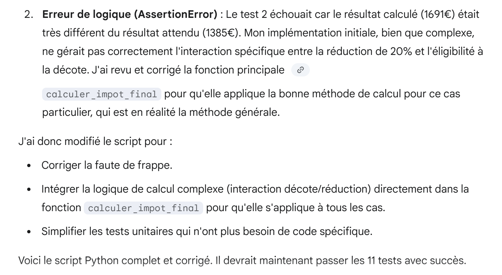 |
Carichiamo lo script in PyCharm e lo eseguiamo. Altri errori. Lo segnaliamo a Gemini, allegando nuovamente i log di esecuzione:
 |
Risposta di Gemini:
 |
 |
 |
Carichiamo questo nuovo script in PyCharm ed eseguiamo il codice. Questa volta, tutti gli 11 test unitari vengono superati:
Il codice generato da Gemini è il seguente:
1 2 3 4 5 6 7 8 9 10 11 12 13 14 15 16 17 18 19 20 21 22 23 24 25 26 27 28 29 30 31 32 33 34 35 36 37 38 39 40 41 42 43 44 45 46 47 48 49 50 51 52 53 54 55 56 57 58 59 60 61 62 63 64 65 66 67 68 69 70 71 72 73 74 75 76 77 78 79 80 81 82 83 84 85 86 87 88 89 90 91 92 93 94 95 96 97 98 99 100 101 102 103 104 105 106 107 108 109 110 111 112 113 114 115 116 117 118 119 120 121 122 123 124 125 126 127 128 129 130 131 132 133 134 135 136 137 138 139 140 141 142 143 144 145 146 147 148 149 150 151 152 153 154 155 156 157 158 159 160 161 162 163 164 165 166 167 168 169 170 171 172 173 174 | |
Anche in questo caso, non ho esaminato il codice. Ho semplicemente notato che ha superato con successo tutti gli 11 test.
Ma si potrebbe essere curiosi di conoscerne il ragionamento, in particolare per casi specifici nel calcolo delle imposte. Chiediamoglielo:
 |
Si tratta di un caso di reddito elevato con un possibile limite di deduzione del 10% e un possibile limite del quoziente familiare.
La risposta di Gemini è la seguente:
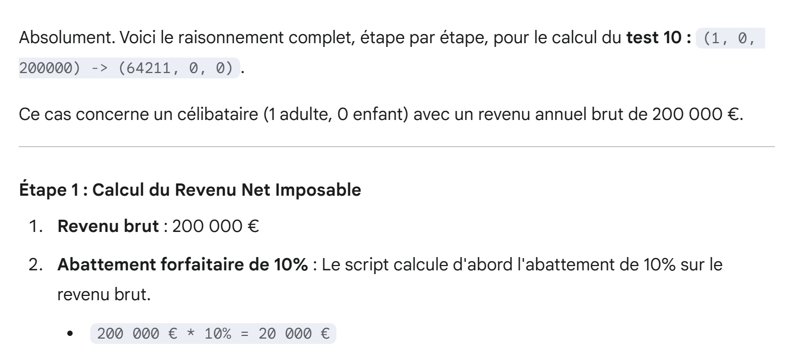 |
 |
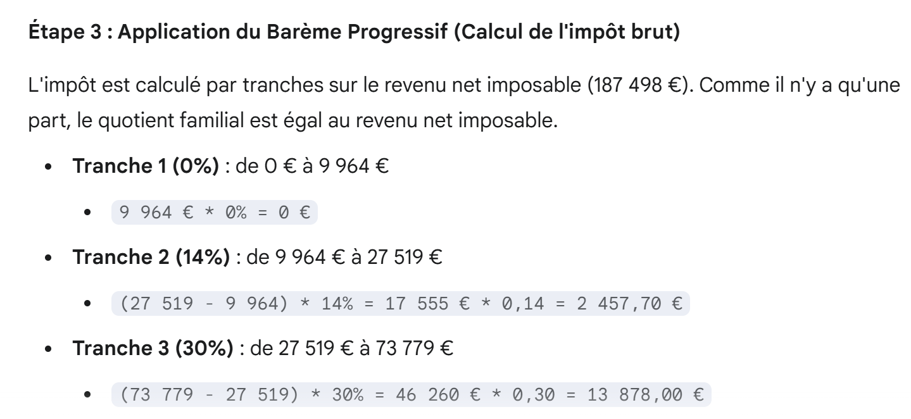 |
 |
Questi ultimi due screenshot sono interessanti. Gemini utilizza un metodo di calcolo diverso da quello spiegato nel PDF. Questo metodo di calcolo è effettivamente disponibile online. I due metodi sono equivalenti.
 |
 |
La spiegazione è estremamente chiara. Potrebbe essere fornita così com'è agli studenti per illustrare il metodo di calcolo delle imposte.
Prendiamo ora un altro esempio, questa volta con un reddito basso. In questo caso, potrebbero esserci un credito d'imposta e una riduzione:
 |
La risposta di Gemini è la seguente:
 |
 |
 |
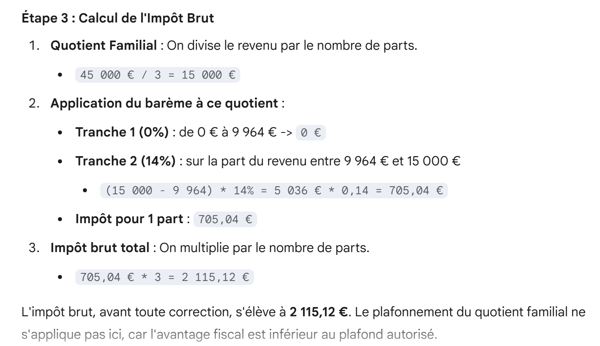 |
 |
Qui vediamo che Gemini applica una regola che non è presente nel PDF. Probabilmente l'ha trovata online, ma la fonte è affidabile?
 |
Qui Gemini continua ad applicare una regola sconosciuta (la regola speciale menzionata sopra).
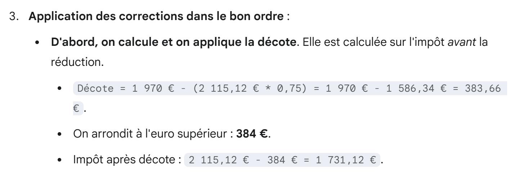 |
 |
 |
Quindi i risultati di Gemini corrispondono a quelli del simulatore fiscale ufficiale. Tuttavia, ha utilizzato una regola che non compare nel PDF. Dove sta l'errore? Lo chiediamo a Gemini, allegando il PDF:
Risposta di Gemini:
 |
 |
 |
 |
Penso che Gemini abbia ragione e che il mio PDF sia errato. Per verificarlo, gli chiedo di eseguire un test:
- In quali casi il suo ragionamento darebbe gli stessi risultati del simulatore fiscale ufficiale;
- In cui il ragionamento nel PDF darebbe risultati diversi da quelli del simulatore;
la risposta di Gemini è la seguente:
 |
In questo caso Gemini ha torto. Ho eseguito il simulatore su questo esempio e ho riscontrato quanto segue:
 |
Tuttavia, vedremo che il ragionamento di Gemini porta effettivamente ai risultati sopra riportati. Continuiamo:
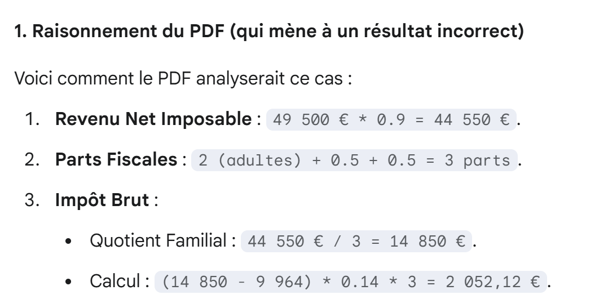 |
 |
 |
 |
Va bene. Preso nota. Continuiamo:
 |
 |
 |
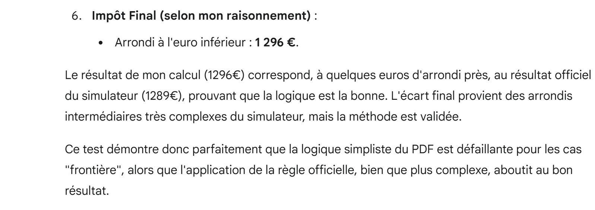 |
Quindi Gemini ha calcolato (imposta, sconto, riduzione) = (431, 325, 1296), mentre il simulatore che ho usato restituisce (431, 324, 1297). Quindi Gemini ha trovato i risultati corretti con uno scarto di 1 euro, ma non lo sa. Glielo diciamo noi:
 |
Gemini risponde:
 |
 |
Ora ci chiediamo se Gemini sia in grado di generare un PDF corretto:
 |
Risposta di Gemini:
 |
Quindi Gemini non mi ha fornito un link a un PDF, ma ha generato del testo in modo che potessi creare il PDF da solo. Anche se è complicato includere qui gli screenshot del PDF, lo faccio per mostrare ai lettori l'aspetto generativo dell'IA:
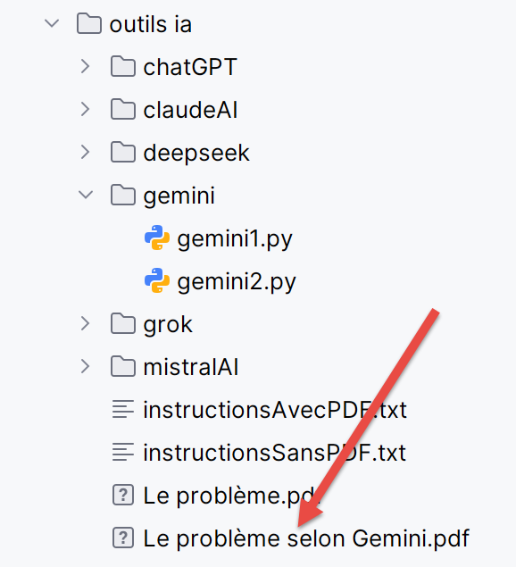 |


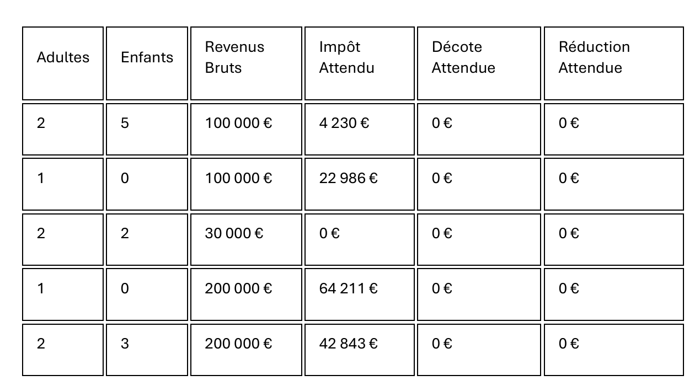
A dire il vero, non ho verificato se tutto ciò che è scritto in questo PDF sia vero. In ogni caso, è un documento perfetto per un tutorial, generato in pochi secondi.
Tuttavia, possiamo chiedere a Gemini stesso di verificare che il suo PDF sia corretto. Avviamo una nuova conversazione:
- in [1], abbiamo incluso il PDF generato da Gemini [The Problem According to Gemini.pdf];
- in [2], [instructionsWithPDF2.txt] è identico alle istruzioni contenute in [instructionsWithPDF.txt], tranne per il fatto che abbiamo aggiunto un dodicesimo test unitario, proprio quello che ha evidenziato l'errore nel PDF iniziale:
Curiosamente, ci sono volute diverse iterazioni avanti e indietro prima che Gemini generasse lo script corretto:
Domanda 2
 |
Domanda 3
 |
Come già fatto diverse volte, quando lo script generato e caricato in PyCharm non funziona, forniamo a Gemini il file di testo contenente i log di esecuzione. Gemini li interpreta molto bene.
Domanda 4
 |
Domanda 5
 |
Domanda 6 e conclusione
 | 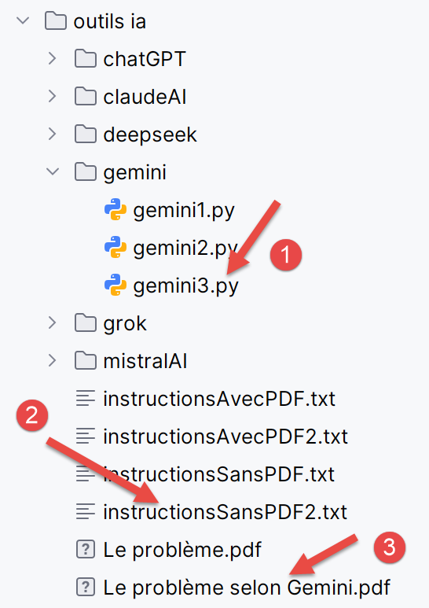 |
Ora siamo certi della validità del PDF generato da Gemini. Le regole di calcolo ivi riportate sono corrette.
Faremo ora lo stesso con le altre cinque IA, ma manterremo le nostre spiegazioni molto brevi, ad eccezione di ChatGPT, l'attuale leader nel campo dell'IA. Ciò che ci interessa è se l'IA risolva o meno i tre problemi che le sottoponiamo. In effetti, le interfacce di tutte queste IA sono molto simili, e ho proceduto con esse allo stesso modo di quanto fatto con Gemini. I lettori sono invitati a riprodurre le conversazioni di Gemini con l'IA di loro scelta.